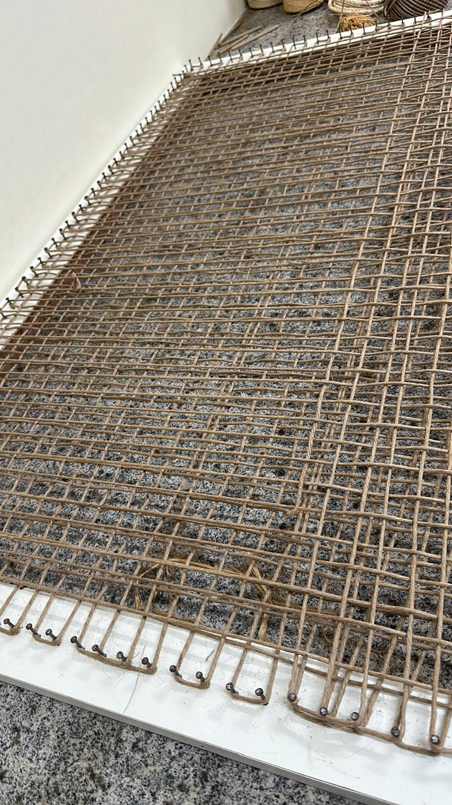
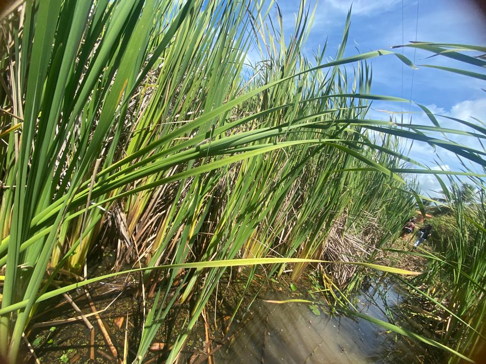

18 Biotêxteis de Fibras Vegetais
18.1 Conceito


Os biotêxteis são geotêxteis fabricados exclusivamente a partir de fibras vegetais, projetados para biodegradação controlada. Representam uma evolução dos geotêxteis convencionais alinhada com princípios de economia circular e soluções baseadas na natureza.
18.2 Geotêxtil de Taboa (Typha domingensis)
18.2.1 Desenvolvimento
O geotêxtil tecido tipo geogrid de taboa é uma inovação protegida por patente INPI BR1020230222110 (concedida 2025), desenvolvida pelo autor e colaboradores.
18.2.2 Características
O geotêxtil de taboa é produzido a partir de folhas de Typha domingensis Pers. (macrófita aquática), tecido em padrão tela simples (plain weave) formando uma malha aberta tipo geogrid com abertura de 10–30 mm (ajustável). A massa por área varia de 300 a 800 g/m², a resistência à tração situa-se entre 2 e 8 kN/m, e a biodegradação ocorre em 12–36 meses (controlável por tratamento).
18.2.3 Mecanismo de Intertravamento
O padrão geogrid permite o intertravamento mecânico com o solo: as partículas de solo penetram nas aberturas da malha, criando um efeito de ancoragem que aumenta a resistência ao cisalhamento na interface solo-geotêxtil.
A resistência de interface pode ser estimada por:
\[ \tau_{interface} = c_a + \sigma_n \cdot \tan \delta \]
onde \(c_a\) é a adesão e \(\delta\) é o ângulo de atrito de interface (tipicamente 0,7–0,9 × \(\phi'\) do solo).
18.2.4 Vantagens
O geotêxtil de taboa aproveita matéria-prima abundante em regiões tropicais (Typha coloniza áreas úmidas), transformando uma planta invasora em insumo produtivo (controle biológico). O custo de produção é 50–70% inferior ao dos geotêxteis sintéticos, com pegada de carbono negativa (sequestro durante o crescimento da planta).
18.3 Geocomposto Híbrido
18.3.1 Conceito
O geocomposto híbrido combina uma camada de manta de fibras vegetais (coco, juta, sisal) com uma malha de reforço de rami (Boehmeria nivea) para proteção integrada de solos.
18.3.2 Componentes
| Camada | Material | Função |
|---|---|---|
| Superior | Manta de fibra de coco | Proteção contra impacto, retenção hídrica |
| Intermediária | Malha de rami | Reforço mecânico |
| Inferior | Manta de fibra de coco | Contato com solo, filtração |
18.3.3 Propriedades
O geocomposto híbrido apresenta resistência à tração combinada de 5–15 kN/m, massa por área de 600–1.200 g/m², durabilidade de 24–48 meses e retenção hídrica superior a 200% do peso seco.
18.4 Geodreno Vegetal Biodegradável
18.4.1 Conceito
O geodreno vegetal é um dispositivo de drenagem subsuperficial fabricado com fibras de taboa e bananeira, utilizando resina vegetal como aglutinante.
18.4.2 Estrutura
O geodreno vegetal é composto por placas drenantes de fibras de taboa e bananeira prensadas, com geometria interna em espinha-de-peixe (herringbone) para condução do fluxo. O aglutinante consiste em resina de mamona (Ricinus communis) com D-limoneno, e o envoltório é de geotêxtil não tecido de fibra de coco.
18.4.3 Desempenho
O geodreno vegetal atinge vazão drenante de 0,5–2,0 L/(m·min) sob gradiente unitário, resistência à compressão de 50–150 kPa e biodegradação controlável em 18–36 meses.
As inovações apresentadas incluem o geotêxtil de taboa (BR1020230222110, concedida 2025), o geocomposto híbrido (pedido depositado) e o geodreno vegetal (pedido depositado).
18.5 Comparativo de Desempenho
| Propriedade | Geotêxtil de coco | Geotêxtil de taboa | Geotêxtil PP |
|---|---|---|---|
| Custo (R$/m²) | 8–15 | 5–12 | 10–25 |
| Biodegradação | 2–4 anos | 1–3 anos | > 100 anos |
| Resistência tração (kN/m) | 3–8 | 2–8 | 5–50 |
| Retenção hídrica | Alta | Muito alta | Baixa |
| Pegada CO₂ | Negativa | Negativa | Positiva |
| Reciclabilidade | Compostável | Compostável | Reciclável |